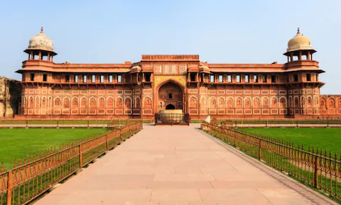

Famous Places to Visit in AGRA
-
TAJ MAHAL
Majestically located on the banks of Yamuna River, this wonder of the world was built by the Mughal Emperor Shah Jahan as a memorial for his beloved wife Mumtaz Mahal.
-

Agra Fort
A place of residence of the Mughal emperors till 1638, this 16th century fort was built by Akbar and is now a World Heritage Site.
-
ITC Mughal
Sprawling over 24 acres of gardens, ITC Mughal boasts of Mughal architecture, and features 233 luxurious suites for a comfortable and luxurious experience.
-
Maikhana, The Lobby Bar
Located at ITC Mughal, Maikhana-The Lobby Bar offers visitors a relaxed ambiance, and serves multi-cuisine dishes along with delicious signature cocktails.
Travel Packages
-
AGRA HERITAGE TOUR 5 DAYS
- Duration: 5 days
- Price: 5000/- per person
- Include:- Taj Mahal, Agra Fort , Akbar's Tomb , Mughal Room
BOOKING NOW
-
AGRA Heritage Tour 7 DAYS
- Duration: 7 days
- Price: 7000/- per person
- Includes :- Taj Mahal, Agra Fort , Akbar's Tomb , Mughal Room , Howard Plaza The Fern-An Ecotel Hotel Agra
BOOKING NOW